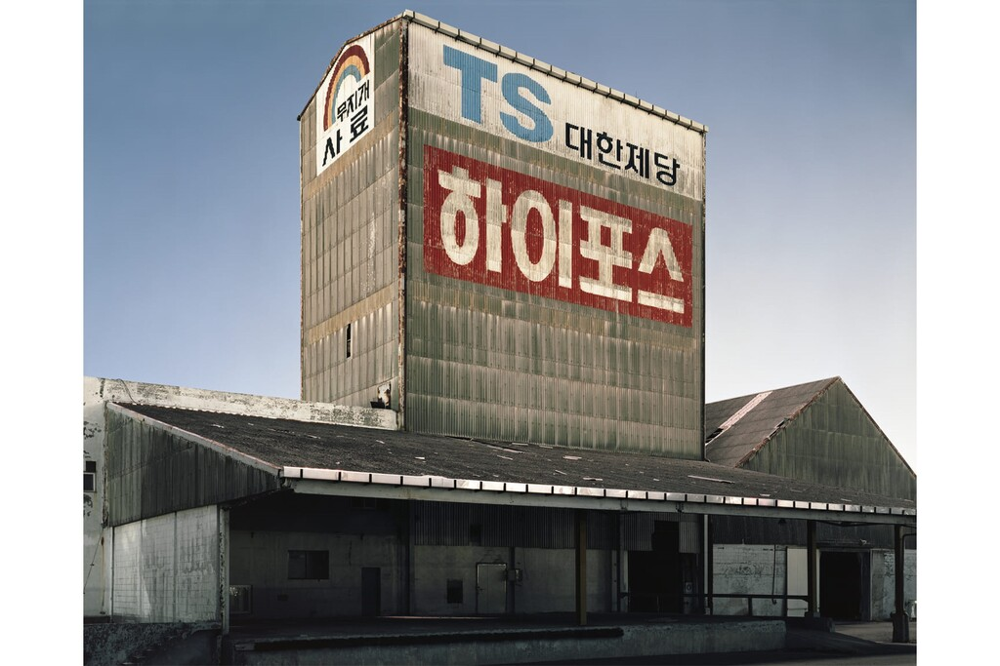
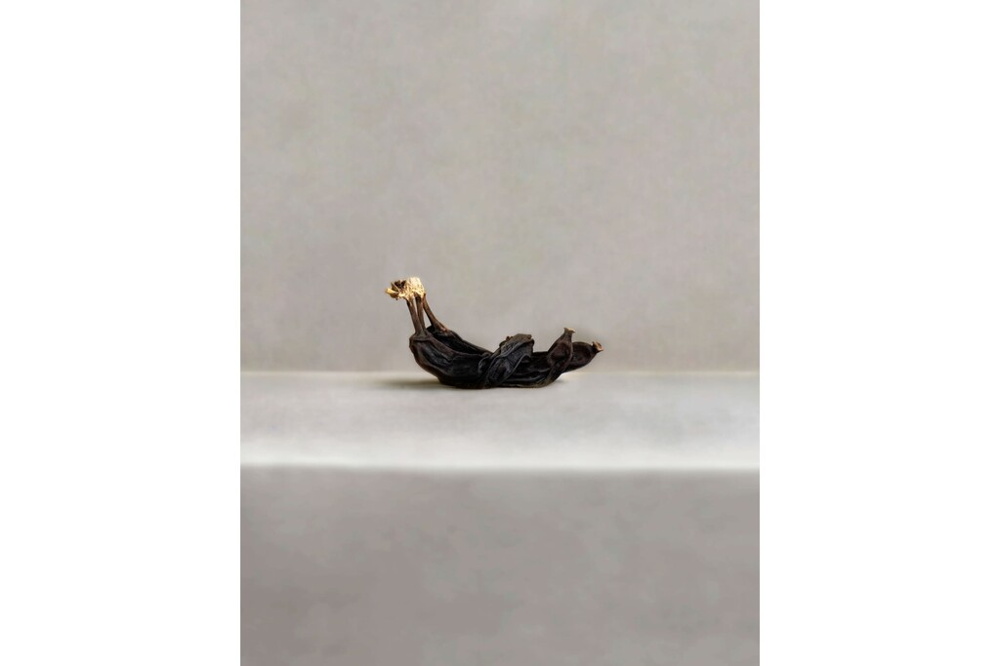
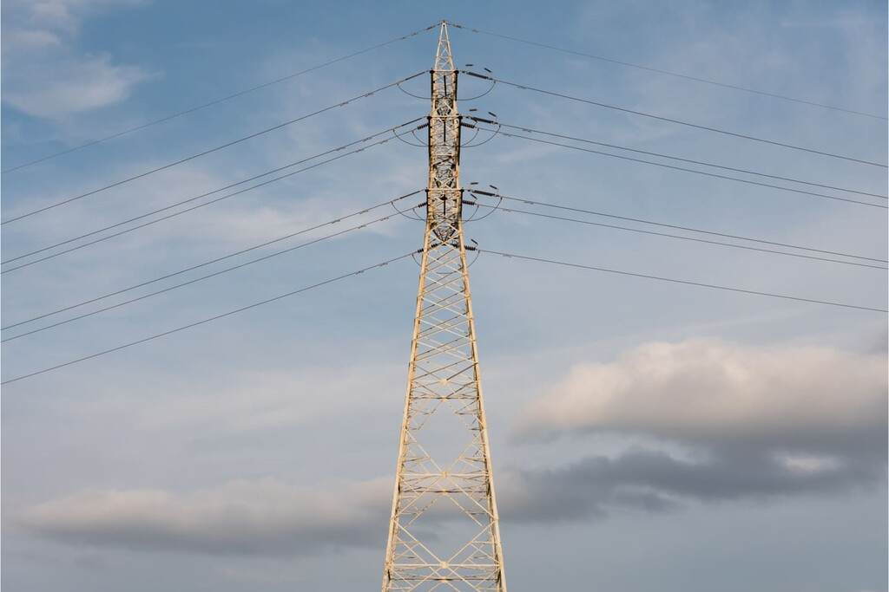

2022년 대구사진비엔날레 특별기획전
다음시선:변신
ㅡV4
2022.08.23-09.25
대구문화예술회관 1-4 전시실
모시는 글
INVITATION
인사말
2022년 8월 23일
대구문화예술회관 관장
김 형 국
전시 안내
INFORMATION
대구사진비엔날레 특별기획전
다음시선:변신
NEXT LOOK : TRANSFORMATION
전시 개막식
전시 기간
2022.08.23 TUESDAY-09.25 SUNDAY
전시 장소
대구문화예술회관 1-4 전시실
작품 소개
ARTISTS WORK
작업 소개글을 확인하려면 사진을 클릭하세요.

권록환, Blackwave_#075, pigment print,150x188cm, 2020
권해일, Compressor10_01, archival pigment print, 30x20cm, 2017
김미영, 다보탑_그 기억의 그림자시리즈_두 개의 삼각형 사이에서, HD Video, 가변크기, 2017
노시갑, Autre Art Nouveau #06 새포아풀 Poa annua L., Korean Traditional Paper, 100x80cm, 2019
박심정훈, 어쩌면그런 관계_02, Archival Pigment Print, 28x35cm, 2018
오철민, 비닐은미, Inkjet Print on Matte, 116.8X72.7cm, 2019

유병완, 경계_#4, Inkjet Pigment Print, 116.8x91cm, 2021
윤보경, 마주, 다채널영상, 가변설치, 2019
한규옥, An inner monologue_01, Archival Pigment Print, 40x60cm, 2016

woozi.p, 송전탑, color reversal film, 24x36mm, 2022
Previous
Next